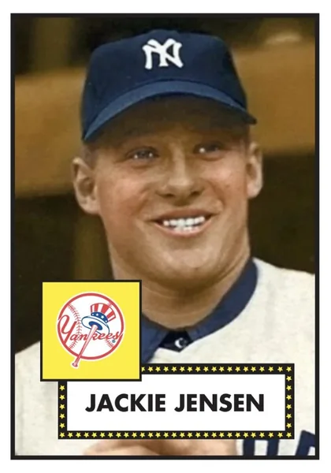

Jackie Jensen "Golden Boy"
Career Highlights & Facts
(Facts are AI-generated and may require verification)
- Earned recognition as a league Most Valuable Player.
- Achieved collegiate athletic success as a consensus All-American in football.
- Suffered from a severe, career-impacting phobia of air travel.
Would you like to find out more about Jackie Jensen?
1950s Boston Red Sox
Mark Armour
Jackie Jensen, the blond rugged Californian who attained great heights on both the football gridiron and baseball diamond, also waged a complex struggle with anxiety that he seemed to have conquered only at the very end of his life, a life that ended too early. A member of the College Football Hall of Fame and an American League Most Valuable Player, Jensen is today most famous for his midcareer decision to leave baseball because he could not bear to fly in an airplane.
Jack Eugene Jensen was born on March 9, 1927, in San Francisco to Wilfred and Alice (Delany) Jensen. Wilfred owned a meat-cutting business and worked briefly as a patrolman, but he and Alice divorced when Jackie was 5 years old. Alice, an Arkansas native, worked at various jobs in San Francisco to support Jackie and his two older brothers. Alice and the boys moved several times during Jackie’s childhood, mainly in Oakland. Wilfred was the second of Alice’s four husbands.
Jack entered Oakland High School in 1941 and became an immediate sensation. Besides starring in baseball and football, he also wrote for the school paper, became class president, and was the idol of all the other kids in the school. In the spring of 1942 guidance counselor Ralph Kerchum, taken by the possibility of greatness in his student, recorded an interview with Jack and made a 78-rpm record for posterity. The questions were not probing (“What’s your favorite sport?” “Baseball.” “What’s your next favorite?” “Football”) but indicate the effect Jensen had on adults as a teenager. Kerchum became something of a surrogate father to Jensen, and remained a close friend for the rest of Jensen’s life.
Jack graduated from high school in January 1945, and enlisted in the Navy, as both his brothers had done. He enrolled in radio school hoping to work on a communications ship, but he was still in school when the war ended in August. He was then stationed at a base in Idaho, mostly playing football and working as a lifeguard. He stayed in the Navy until his discharge in the summer of 1946. That fall he entered the University of California on the GI Bill.
The well-built (5-feet-11, 190 pounds) Jensen’s athletic reputation, built in high school in neighboring Oakland as well as in the service, made his college football debut much anticipated. The first time he touched the ball, a punt return against Wisconsin, he ran 56 yards for a touchdown. By the end of his freshman year he was considered the finest back in the Pacific Coast Conference (today called the Pac-10), and was selected to play in the East-West Shrine game. In his sophomore season, the Golden Bears finished 9-1, with Jensen the fullback and best defensive back. The following season, 1948, Jensen was a consensus All-American, rushing for more than 1,000 yards and leading the team to an undefeated season. Jensen was injured early in the second half of the Rose Bowl game, and his Bears were defeated by Northwestern.
Jensen also starred on the baseball team at Cal. In 1947 he was the team’s ace pitcher, hit .385, and helped his team win the inaugural College World Series. In the regional final he outpitched future football Hall of Famer Bobby Layne of Texas, then helped his team win the final series against a Yale team that included future President George H.W. Bush. Jensen was academically ineligible in his sophomore year, but came back to help the team to a 31-17 record in 1949, earning All-American honors as he had in football.
By this time Jensen was one of the more famous athletes on the West Coast, both for his sporting exploits—he was universally called The Golden Boy—and his relationship with diving champion Zoe Ann Olsen. Jensen and Olsen both attended Oakland High School, though she was three years behind him. When they began dating in 1946, Jensen was a freshman at Cal and Olsen was 15 years old and still in high school. Olsen was a Golden Girl in her own right, and won the silver medal in springboard diving in the 1948 Summer Olympics in London. The two were blond, attractive athletic heroes, and the press could not get enough of their story.
After his junior year at Cal, in the spring of 1949, Jensen disappointed many Cal loyalists by forgoing his senior year, instead signing a contract to play for the Oakland Oaks baseball club of the Pacific Coast League. Jensen had been scouted by several major-league teams, including the New York Yankees, who reportedly offered him a $75,000 bonus. The Oaks matched the bid, and Jack decided that the Oaks offered a higher level of competition than the lower minor-league berth the Yankees had suggested he would get. Jensen hit .261 in his first professional season, after which he was sold (along with
Billy Martin
and others) to the Yankees.
On October 16, 1949, he and Zoe Ann were married in Oakland in front of 1,500 people and surrounded by dozens of reporters and television cameras. The couple was escorted to the ceremony by motorcycle escort. Jack was 22, and Zoe Ann was 18, an Olympic star and recent high-school graduate. Their marriage would remain the subject of magazine stories even as they privately struggled to live as one famous couple. Jack pursued his career, while Zoe Ann mainly stayed home and raised a family.
In New York Jensen was spoken of as the heir to
Joe DiMaggio
in center field. In his rookie season of 1950, Jensen was used as a pinch-hitter and fifth outfielder for the Yankees, playing behind DiMaggio,
Gene Woodling
Hank Bauer
, and
Cliff Mapes
. He came to bat just 78 times, hitting .171 with just a single home run (off the Senators’
Al Sima
on September 11). The Yankees won the American League pennant, and Jensen had a single pinch-running appearance in their four-game sweep of the Philadelphia Phillies in the World Series. The following season he hit much better, .298 (50-for-168) with eight home runs in 56 games, but he was demoted to Kansas City on July 31. His frustration with the move led him to speak with the San Francisco 49ers football team about a possible career switch. He hit well enough in the American Association, .263 with nine homers in 42 games, but he had been passed on the Yankees’ depth chart by the 19-year-old rookie
Mickey Mantle
. He was recalled in September 1951, but was left off the Yankees World Series roster.
Nonetheless, a productive spring put Jensen in center field to start the 1952 season for the Yankees, with DiMaggio retired and Mantle in right field. However, after a 2-for-19 start, on May 3 Jensen was abruptly traded to the Washington Senators in a six-player deal. Yankees manager
Casey Stengel
later called this the worst trade the Yankees made during his tenure with the club.
Bucky Harris
, Washington’s manager, put Jensen in right field and hit him third in the batting order the rest of the season. Jensen responded with a breakout season, hitting .286 with 10 home runs and 80 runs batted in with Washington. He was hitting .314 at the All-Star break, and his former manager, Stengel, chose him as a reserve outfielder with the American League All-Stars. He entered the game in right field in the fifth, but the game ended after five innings due to rain. In a
Sport
article in December,
Clark Griffith
, the 82-year-old Senators owner, teased the Yankees after the season, calling them “our number one farm club.” Meanwhile, Zoe Ann Jensen answered calls to return to diving and trained enough to earn a Bronze Medal at the Olympic games that summer in Helsinki, Finland. After the 1952 Olympics, Jensen signed a few endorsement deals that officially ended her amateur career. The Jensens’ first child, daughter Jan, had been born in 1950.
For a man who had had so much athletic success, Jensen often struggled with self-doubt or general dissatisfaction with his chosen career, and the family sacrifices he had to make. In 1953 Jensen had another fine year, .266 with 10 home runs, but still considered retiring in the offseason. “I decided to protect my family,” he later told Boston sportswriter Al Hirshberg. “That is, to get out of baseball and into a job with a future.” At the close of the season he went to Japan with a group of all-stars, and it was the flight to Tokyo that others later recalled as the start of his problems with flying. In December he was traded to the Boston Red Sox for outfielder
Tommy Umphlett
and 18-game-winner
Mickey McDermott
. The Jensens had just had their second child, son Jon, and Jack was still not sure he was going to play again.
Red Sox general manager
Joe Cronin
pressed the case. “I didn’t agree with Jack that he wasn’t good enough,” Cronin said. “In New York he was lost in a crowd of outfielders. In Washington, the heat and the big park killed him.” In fact, Jensen had hit just four home runs at home in his two seasons with the Senators, against 16 on the road. Cronin told Jensen that
Fenway Park
was made for him, and that the Red Sox would give him a raise. After speaking with Zoe Ann, Jack agreed to join the Red Sox.
Jensen was joining an outfield that already included left fielder
Ted Williams
and right fielder
Jimmy Piersall
. In fact, Piersall was widely considered the best defensive right fielder in the game, and manager
Lou Boudreau
did not want to move him. Jensen played mostly center field in 1954, though occasionally Piersall played there in road games. Beginning in 1955 Piersall became the full-time center fielder and Jensen returned to his regular right-field post. The Red Sox outfield was considered the best in baseball for the five years the three played together.
After hitting .386 in April 1954, Jack slumped badly in May—hitting .157 while grounding into nine double plays—and he began to hear boos at Fenway Park. He turned his season around, though, batting .276 with 25 home runs and 117 runs batted in (third in the league). He also stole a league-leading 22 bases, while unfortunately setting a major-league record by grounding into 32 double plays. Nonetheless, at the end of the season Jensen was named the Red Sox’ Most Valuable Player by the Boston writers.
Though Jensen played at this high level for the next five years, he did come in for his share of booing by the Boston fans. In 1958 Al Hirshberg wrote a story for
Sport
asking the question, “What Do They Want From Jackie Jensen?” Like
Vern Stephens
a few years earlier, Jensen was a big right-handed hitter who hit long home runs and fielded his position well, but did not seem to meet the fans’ very high expectations. By the mid-1950s, Red Sox fans had grown tired of a series of mediocre teams, and many particularly loud rooters began to take their frustration out on some of the players, notably Jensen.
After the 1954 season the Jensens bought a home in Crystal Bay, Nevada, on Lake Tahoe. Both Jack and Zoe Ann were avid skiers and golfers, and both also enjoyed the local nightlife at the casinos. The Jensens still owned a home in Oakland, and Jack co-owned a restaurant, the Bow and Bell, in Oakland’s famed Jack London Square. The next offseason Jensen began hosting the Jackie Jensen Pro-Am golf tournament in Danville, California.
Jack returned to his natural right field in 1955, and celebrated by having a nearly identical season to what he had the year before—26 home runs, a league-leading 116 RBIs, and a .275 batting average. In August, Jensen signed to play himself in a movie about his life, mainly his days as a youngster resisting temptations and keeping focused on his goals. Jack’s own role was small—he appeared at the end of the film in one scene, while other actors played younger versions of him. The film debuted in early 1956 and played mostly in high schools around the country.
In 1956 Jensen hit a career-high .315 with 20 home runs, a league-leading 11 triples, and 97 RBIs. By this time the Jensens’ marriage was struggling, as Zoe Ann began to resent how much of her life she had given up to stay home and raise children while Jack went off and achieved additional fame. For his part, Jack stewed over all of the time away from his family, grew increasingly jealous of Zoe Ann’s male friends, and began entertaining thoughts of retiring. The public remained unaware of all of this, and the “Golden Couple” was often featured in magazines skiing or lounging by the pool with their children. Jensen’s fear of flying remained a problem, and may have been the reason the Red Sox had him remain in San Francisco in March 1957 to train with the Seals (the Red Sox Pacific Coast League affiliate) rather than endure the long train ride to Sarasota and then to Boston. Once the season started, Jensen had yet another excellent season, clubbing 23 home runs to go along with 103 runs batted in and a .281 average.
Jensen had his best baseball season in 1958. He slugged a career-high 35 home runs, drove in a league-leading 122 runs, and hit .286. He started his first All-Star Game, hitting third and playing the entire game in right field (he was hitless in four at-bats). Though the Red Sox finished third behind the Yankees and the Chicago White Sox, after the season Jensen was named the league’s Most Valuable Player, receiving nine of 24 first-place votes to beat out
Bob Turley
and
Rocky Colavito
. He was featured on the cover of
Sports Illustrated
in June, under the headline “Wheel Horse of the Red Sox,” but much of the story focused on Jensen’s frustrations with the life of a ballplayer. “In baseball you get to the point where you don’t think you have a family,” said Jensen. “It just looks like I’m not built for this life like some ballplayers. You are always away from home and you’re lonesome, and as soon as I can, I intend to get out.”
In the April 1959 issue of the
Saturday Evening Post
, Jensen was more explicit, in an article entitled, “My Ambition Is To Quit.” One photo accompanying the story showed Jack kissing Zoe Ann as he held a suitcase, departing for another long stay away, as his two children looked on unhappily. The caption read: “I spend less than half my time with the people I love most.” He also addressed his fear of flying, which he said he could handle only with tranquilizers and sleeping pills. In fact, Jensen often drove from city to city rather than fly with the team, something more manageable before the league expanded to the West Coast. For Jensen, flying had become not only terrifying but also humiliating—his medication made him appear drunk and more than once he had to be helped on and off a plane while onlookers gazed.
In 1959 Jensen led the league in RBIs for the third time with 112, to go along with 28 home runs and a .277 average. He also won his first Gold Glove Award—the award had only begun in 1957, and he might have won others had it been around earlier in his career. In the Red Sox’ next-to-last game, he finished 4-for-6 including a game-ending home run in the 11th inning to beat the Senators. He received permission to skip the team’s final game, instead boarding a train for the Coast. Although rumors of his retirement swirled all season, Jensen waited until January 1960 before officially announcing that he was through. He was 32, and seemingly still at the top of his game.
Most reporters, then and later, blamed Jack’s fear of flying for his retirement, but his difficult marriage played an equally large part. Both Jensens reiterated that Zoe Ann did not want him to quit—it was solely Jack’s decision to be home with his family. After a year off minding his restaurant and considering other investment options, Jensen returned to the Red Sox for the 1961 season. His flying dilemma had grown worse because the American League had a new team in Los Angeles that season, necessitating the addition of three long round-trip plane rides to the old schedule.
At the end of April, hitting .130, Jensen left the team in Detroit and took a train to Reno. Zoe Ann reportedly burst into tears when she saw her husband’s defeated face. The two drove to Las Vegas to see a noted nightclub hypnotist, a last resort. After several days of treatment, Jensen joined the Red Sox in Los Angeles, and hit his first home run of the year on his return. Over the next four months (May through August) he hit .287 with 12 home runs, not terribly below his previous standards, but faded in September. His off-field struggles continued – failing to show at Boston’s Logan Airport for a flight to Cleveland, he instead drove the 650 miles himself and got to the game on time. With the Red Sox scheduled to make a trip to Los Angeles in August, Jensen told the Red Sox he could not go, and instead joined the team in Kansas City, their next stop.
And then it was over. “Everybody was hoping it would work because he was such a nice person and a good team player,” recounted teammate
Ike Delock
to writer George Martin years later. “But in spring training he wasn’t as fast; he’d lost that little half-step, couldn’t throw as well, couldn’t hit nearly as well.” He made it through the season, but finished with just 13 home runs and 66 RBIs, well off the numbers he had posted annually for so many years. After the season, he retired again, this time for good. At the end, Jensen could claim a .279 career batting average with 199 home runs and 929 RBIs in 1,438 major-league games.
Jensen’s retirement years were not always smooth. He invested heavily in real estate and a golf course, but lost much of his money. He took a job working for Harrah’s Casino in Lake Tahoe, setting up tournaments and boat races, and befriending famous entertainers and politicians. He also had several national endorsement contracts, including Gillette and Camel cigarettes, and briefly sold cars in San Jose. Despite his vows to spend more time with his family, their expensive lifestyle required Jack to travel a great deal to earn a living and he was at home little more than he had been. Jack and Zoe Ann finally divorced in 1963, Zoe Ann claiming excessive cruelty, including violence. She later claimed he hit her when he felt jealous of her friendships, and that she lost respect for him when he retired from baseball. Despite this, they soon remarried, then divorced again after a couple of years. The two divorces wiped out Jensen financially and also required that he work hard to pay alimony and child support for three children.
In 1967 Jack landed a radio show at KTVN in Reno, and began dating the producer—a well-traveled and well-schooled divorcee from Virginia named Katherine Cortesi. In February 1968 Jack and Katherine married, and Jack began exploring new worlds he had not known. The two spent most of their time not going to public functions or athletic events, but escaping to Nevada’s deserts and collecting Indian relics and studying the history of the region. Jensen went back to school and finished his degree in speech, with a minor in history.
Jack’s highest-profile job in his retirement years was as a color commentator for ABC’s college football coverage, working alongside Keith Jackson. In 1968 Jack became head baseball coach at the University of Nevada-Reno, which, combined with his ABC job, earned him enough to get by. In March 1969, at a baseball practice, the 42-year-old Jensen suffered a serious heart attack that left him bedridden for 10 days. The suspected causes: extreme tension, and his two-to-three-pack-a-day cigarette habit. When he recovered, the couple sailed for Italy to stay at Katherine’s aunt’s estate—the first extended period of relaxation Jack had had in many years. When he returned to the states, he learned he had lost his job with ABC.
Jensen worked briefly with the state of Nevada as a deputy director in the Office of Economic Opportunity. In 1974 he returned to his roots, becoming head baseball coach at the University of California. He held the Cal job for four years, leading the team to a 109-95 overall record. Jack loved the opportunity to return to Berkeley, and loved working with the players, but was frustrated by the administrative side of the job, the focus on making a profit, and the independent, free-thinking nature of the student-athletes.
Jensen’s contract was not renewed after the 1977 season. He and Katherine moved to Fork Union, Virginia, to be nearer to her mother. The couple bought an old farmhouse and 95 acres of a former tobacco plantation. They invested the money from selling their California condo, along with timber sales, into establishing a Christmas tree farm. The farm was a long-term commitment, preparing fields and planting trees that would not be usable for several years. Jack also took a job at the local Fork Union Military Academy, working in the admissions office and with the baseball team. In contrast to Berkeley, Jensen loved the discipline and comportment of the students at the academy. Jensen also ran a local baseball camp, and traveled (occasionally by airplane) to events and Old-Timers games.
On July 14, 1982, Jensen suffered a heart attack at home, and died en route to the hospital in Charlottesville. He was 55 years old, and thought to be in fine physical condition—he had had regular physicals and his work on the farm had kept him in top shape. A great and storied athlete, Jensen had spent most of his glory years anxious and worried about his life, but appeared to have finally found happiness and contentment on a small farm in Virginia. He was survived by his wife and three adult children.
Ron Fimrite, “A Fear Of Flying,”
Sports Illustrated
, April 12, 1976.
Al Hirshberg, “Why Jackie Jensen is Coming Back,”
Sport
, February 1961.
Al Hirshberg, “What Do They Want From Jackie Jensen?”
Sport
, September 1958.
George L. Martin,
The Golden Boy—A Biography of Jackie Jensen
(Peter E. Randall, 2000).
Shirley Povich, “Jackie Jensen—The Yankees’ Greatest Mistake,”
Sport
, December 1952.
Al Stump, “How Jackie Jensen Found Himself,”
Sport
, February 1955.
Full Name
Jack Eugene Jensen http://dev.sabr.org/?p=61695
Born
March 9, 1927 at San Francisco, CA (USA)
Died
July 14, 1982 at Charlottesville, http://dev.sabr.org/?post_type=event&p=16497 (USA)
Stats
Baseball Reference
Retrosheet
Most Valuable Player
Famous Outside Baseball
1950s Boston Red Sox
Career Totals
| WAR | AB | H | HR | BA | R | RBI | SB | OBP | SLG | OPS | OPS+ |
|---|---|---|---|---|---|---|---|---|---|---|---|
| 27.8 | 5236 | 1463 | 199 | .279 | 810 | 929 | 143 | .369 | .460 | .829 | 120 |
Statistics via Baseball-Reference.com
The Original Clue